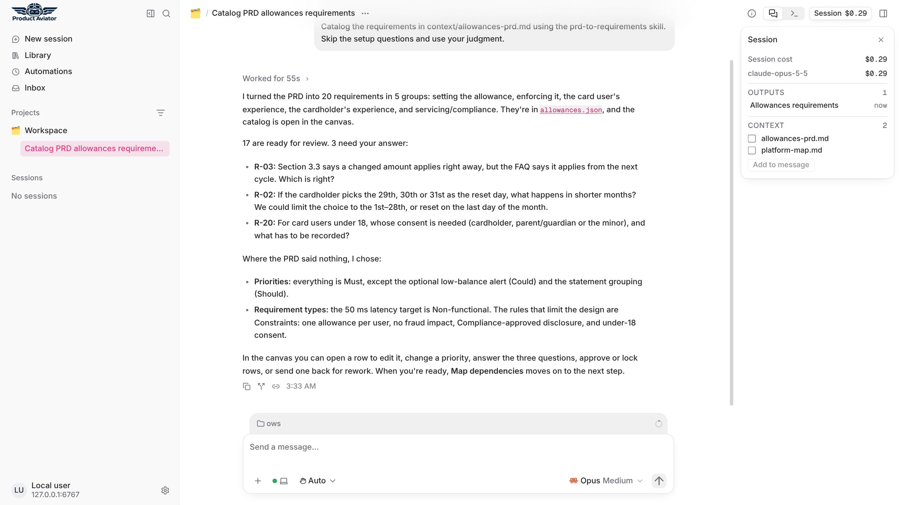
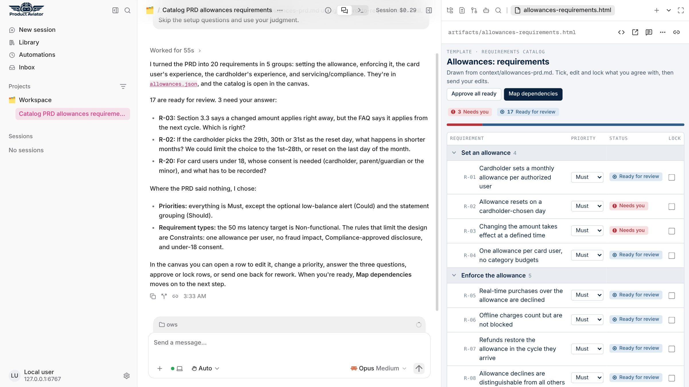
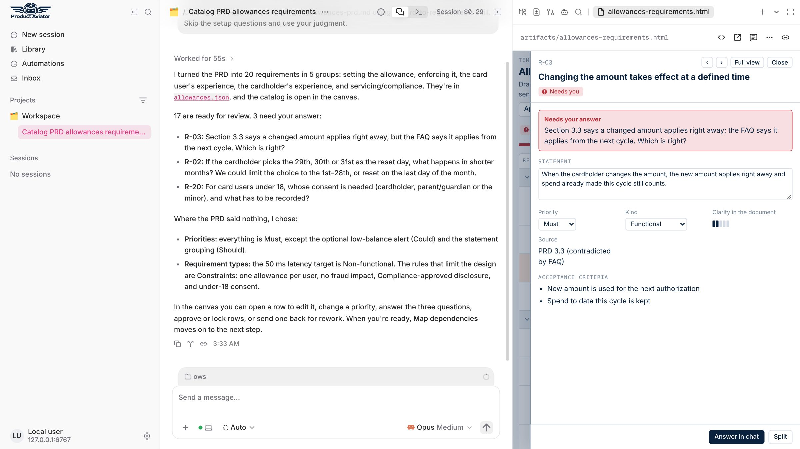
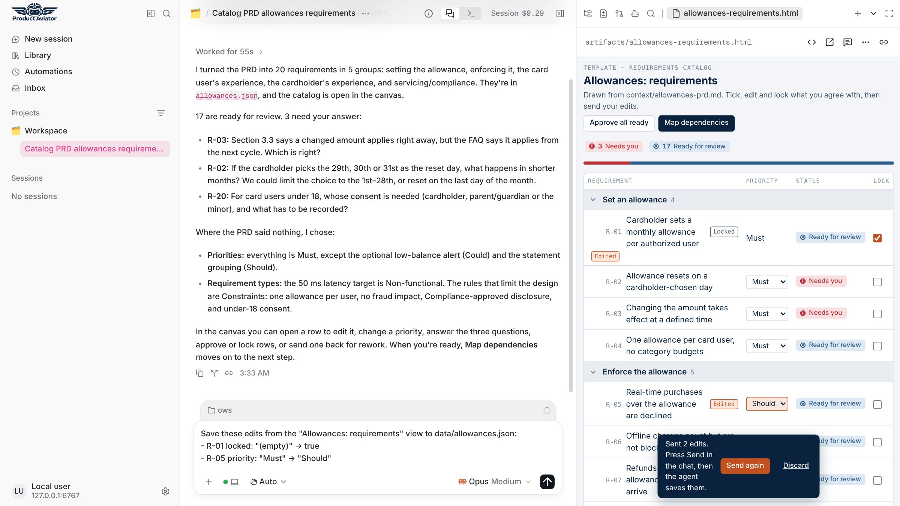
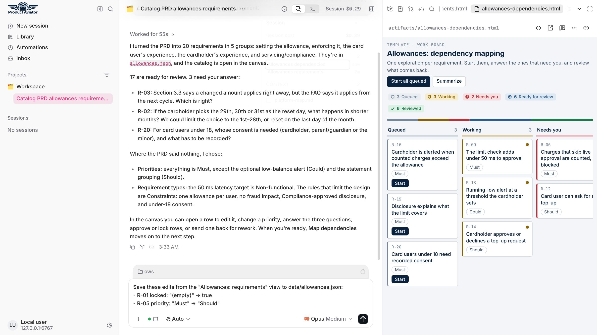
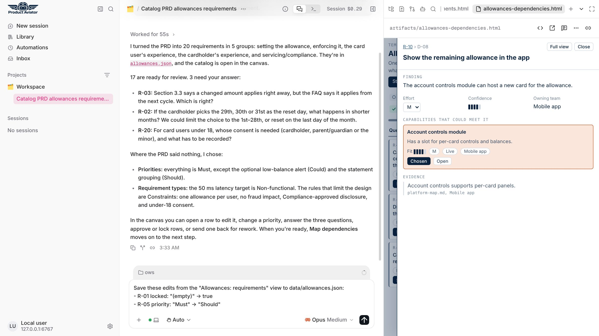
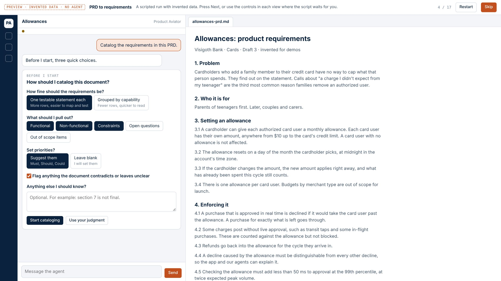
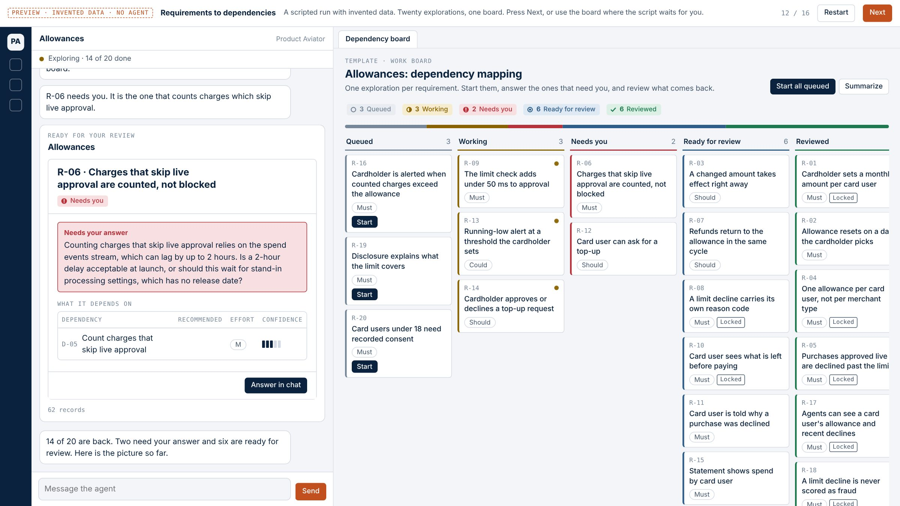
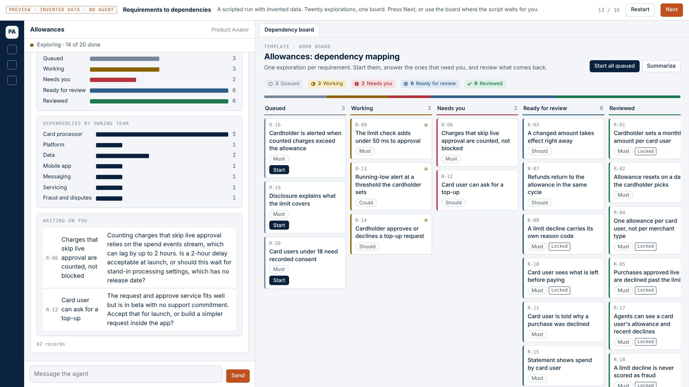

A product manager takes a PRD to a reviewed requirements catalog, then to a map of platform dependencies. Six of these screens are the real app, running the branch built tonight with a live agent. Three are design targets that need one more change to the app.
All names and data are invented. "Visigoth Bank" and its Allowances feature do not exist.
A Session panel sits beside the chat. Context lists the documents in the workspace's context folder; tick some and they are added to your next message as file mentions. Outputs lists what this session has produced, newest first.

Asked to catalog a PRD, the agent wrote 20 records to a dataset and the catalog drew itself from them. This is a real run from tonight: 55 seconds, three questions flagged. The agent wrote no HTML. The panel has stepped aside into the Session button.

Opening a row shows the record as a card: the question that needs an answer, the statement (editable), its source in the document, acceptance criteria, and the actions for its current state.

Changing a priority or locking a row marks it as edited in your color. Send to agent writes the changes into the message box as plain sentences. Nothing changes the data behind your back, and there is a record of every change in the conversation.

The next stage adds its own status to the same dataset and shows one tile per requirement, in a lane per state. Start runs one exploration as a sub-agent. Tiles move by themselves as explorers report, and the view keeps your place while it redraws.

A requirement opens to its dependencies, a dependency opens to the capabilities that could meet it, with evidence quoted from the platform document. Choosing a different capability is an edit like any other.

Short choices belong in the conversation, not the canvas. The same view files already render in this compact form. The app cannot place them inline yet, so tonight they open in the canvas instead. This frame is from the standalone preview.

When one item needs you, the agent brings it to you as a card in the conversation, while the board stays in the canvas.

Where things stand, as counts and bars drawn from the same dataset, at the moment the agent reports.

State changes now go straight to the agent. Start, approve and the lock box no longer wait for Send. They appear in the chat as a short "Canvas action" message. Content edits still collect and wait for you, as in the fourth screen.
Other participants are designed but not built. How a risk agent or a designer appears in this same conversation is worked through in Conversation Participants.
Views are drawn from data. The agent adds and changes records. The catalog, board, cards and summary are all pictures of one dataset, so they cannot disagree.
Your marks are one color. Anything you edited, sent back or wrote is shown in the same warm color. Everything else on screen is the agent's.
You send. Buttons write a sentence into the message box. The agent acts when you press Send.